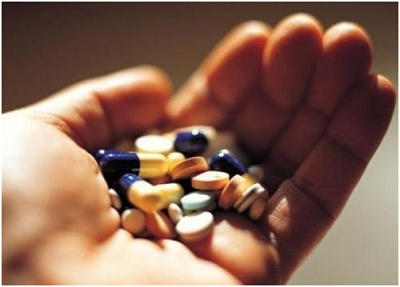

Những tác hại không phải ai cũng biết khi sử dụng thuốc giảm cân
Thuốc giảm cân hứa hẹn mang lại hiệu quả giảm cân rõ rệt mà không cần kiêng khem, luyện tập gì nhiều. Thế nhưng ẩn chứa đằng sau đó là một loạt nguy hại cho sức khỏe, từ cảm giác mệt mỏi, chán nản và nếu lạm dụng có thể gây tử vong. Thuốc giảm cân ẩn chứa nhiều nguy hại tới sức khỏeBản chất của thuốc giảm cân chủ yếu hoạt động bằng cách tác động trực tiếp vào hệ tiêu hóa và những bộ phận liên quan nhằm giảm sự hấp thu các chất, gây mất nước và cảm giác chán ăn cho người sử dụng. Nhờ đó nó sẽ làm giảm dinh dưỡng trong cơ thể và giúp giảm cân. Thuốc giảm cân có thể chia thành 3 loại: là thuốc làm no ống tiêu hóa, thuốc tăng cường chuyển hóa các chất béo trong cơ thể và thuốc gây chán ăn. Mỗi loại có một nguyên tắc hoạt động khác nhưng đều gây ra những nguy hại khôn lường cho sức khỏe chúng ta.
Thuốc gây chán ăn chứa amphetamin hoặc các dẫn chất tương tự như benzedrine, phenamin, mirapront N, isoméride, didrex, anorex, tepanil, adifax,... Nếu lạm dụng thuốc này, nó có thể gây nghiện, từ đó dẫn tới việc sử dụng ma túy. Còn khi ngưng dùng, bạn có thể rơi vào tâm lý hoảng loạn tâm lý, chán nản, muốn tự tử. Đối với người cao huyết áp, bệnh tim mạch thì có nguy cơ đột quỵ, suy tim…
 Thuốc giảm cân gây ra nhiều ảnh hưởng nghiêm trọng đến sức khỏe như cảm giác mệt mỏi, chán nản, thậm chí tử vongThuốc làm no ống tiêu hóa chứa các chất sterculia, methylcellulose… có thể gây tác dụng phụ như trướng bụng, đầy hơi. Những người mắc chứng hẹp đường tiêu hóa có thể tắc ruột khi sử dụng thuốc này.
Thuốc tăng cường chuyển hóa các chất béo chứa nội tiết tố tuyến giáp thyroxin chỉ có tác dụng với người bị chứng béo phì do thiếu lượng thyroxin gây ra. Việc sử dụng liều lượng không hợp lý có thể gây hại cho tim, gây bướu cổ,…
Việc sử dụng thuốc giảm cân có thể gây ra nhiều tác dụng phụ không mong muốn, ảnh hưởng nghiêm trọng đến sức khỏe, do vậy bạn cần cân nhắc kỹ càng khi lựa chọn phương pháp giảm cân nguy hiểm này.